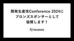

hacomono TECH BLOG
https://techblog.hacomono.jp/
フィットネスクラブやスクールなどの顧客管理・予約・決済を行う、業界特化型SaaS「hacomono」を提供する会社のテックブログです！
フィード
hacomonoデータ基盤におけるデータ転送の課題と今後の対応
hacomono TECH BLOG
こんにちは。hacomono データ基盤部のうまちゃん ( @i9wa4_ ) です。 hacomono データ基盤におけるデータ転送の課題と今後の対応の話を通じて hacomono のデータ基盤部の業務内容の一部をお伝えできればと思います！ hacomono データ基盤のデータ転送システム構成 Embulk で hacomono 環境の Amazon RDS もしくは Amazon Aurora のデータを抽出しお客様環境の BigQuery へ転送する構成となります。 データ転送システム全体は GitHub・Terraform で管理しています。 hacomono データ基盤におけるデータ…
13時間前
【イベントレポート】Scrum Fest Osaka 2024 に協賛しました
hacomono TECH BLOG
こんにちは、hacomono QAの森島です。 hacomonoは、6月21日〜22日開催のScrum Fest Osaka 2024にPlatinum Sponsorとして協賛&現地ブース出展してきました。 この記事では、現地会場やスポンサーブースの様子、スポンサーセッションの紹介など2日間の様子をお届けいたします。 スクラムフェスへの協賛はスクラムフェス新潟2024に引き続き2回目となり 今回もたくさんの方と交流する機会をいただくとともに、参加者の熱気を浴びて我々もエネルギーをいただけました。 参加されたみなさまの学びや参加者同士の縁を繋ぐきっかけ作りに、少しでもhacomonoが貢献でき…
7日前
e-ラーニングで初めて効果を実感した話
hacomono TECH BLOG
こんにちは、運用保守部のちいです。 以前記事を書いたときはEngineering Officeの配属だったのですが、 今年の5月から開発部門の運用保守部配属になりました！ 今回のテーマはeラーニングです。 よく聞くのが、「覚えられない」、「頭に入らない」、「効果がない」… 私も今までに様々なタイプのeラーニングを受けてきましたが どれも完了までに時間はかかるのに内容が右から左へ流れてしまうものが多く、 途中でダレてきてしまうことも多々… しかし、今回受けたhacomonoの社内向けeラーニングが 個人的にとても効果を感じたためご紹介したいと思います。 この記事では特に、以下の方々をターゲットと…
8日前

開発生産性Conference 2024にhacomonoがブロンズスポンサーとして協賛します！
hacomono TECH BLOG
こんにちは！ 株式会社hacomonoの Engineering Office でアシスタントをしているみーこです。 6月28日・29日に開催されるイベント、開発生産性Conference 2024についてのお知らせです。 開発生産性Conference 2024とは？ エンジニア不足が叫ばれるなか、開発生産性が今注目を集めています。 開発生産性Conferenceは、 海外・日本の開発生産性に関する最新の知見が集まり、 各企業のベストプラクティスや開発生産性向上への取り組みを通して、日本のエンジニアリングの向上につながることを目標とします。 昨年7月の開催では、“開発生産性とは何か” をテー…
12日前

ドラッカー風エクササイズでチームを安全な状態にする
hacomono TECH BLOG
はじめに こんにちは。hacomono UX部エンジニアのyasuです。 今年の3月からUX部とリアーキテクチャ&イネーブルメント部が連携し、フロントエンドの開発基盤を刷新するために発足した新プロジェクトにおいて「ドラッカー風エクササイズ」と呼ばれるチームビルディングを実施したので、実施に至るまでの背景や成果などをお伝えしたいと思います。 ドラッカー風エクササイズとは？ 自分の強みを活かすための方法や時間の有効活用など、経営学者のピーター・ドラッカーの思想や理論をベースに『アジャイルサムライ』の筆者が提唱したチームビルディングの手法の一つです。 次の4つの質問に回答する形で相互理解を深め、メン…
15日前
スクラムフェス大阪2024にhacomonoがプラチナスポンサーとして協賛します！
hacomono TECH BLOG
こんにちは！ 株式会社hacomonoの Engineering Office でアシスタントをしているみーこです。 6月21日・22日に開催されるイベント、スクラムフェス大阪2024についてのお知らせです。 スクラムフェス大阪とは？ Scrum Fest Osakaはスクラムの初心者からエキスパート、ユーザー企業から開発企業、立場の異なる様々な人々が集まる学びの場です。 この2日間を通じ、参加者同士でスクラムやアジャイルプラクティスについての知識やパッションをシェアするだけでなく、ここで出会ったエキスパートに困りごとを相談することもできます。 www.scrumosaka.org イベント概…
19日前
Rubyでアスキーアートプログラムを作ってみた
hacomono TECH BLOG
こんにちは。 hacomonoでスクール向け機能を開発している山下です。 先月のRubyKaigiは楽しかったですね！ 私も4年ぶりに参加し、満喫することができました。 移動の関係で残念ながら初日のセッションは聞くことができませんでしたが、私の周りではWriting Weird Codeが面白かったという声が多く、来年はTRICKも開催されるということで、奇妙なコードに興味が出てきました。 エントランスにあったWeird Code ということで自分でも試してみたいと思ったのですが、普段はなかなか馴染みがないため、まずは入門ということでアスキーアートでプログラミングをやってみました。 アスキーア…
22日前
RubyKaigi 2024 エンジニアのセッションレポートをお届けします！
hacomono TECH BLOG
こんにちは。 hacomono Engineering Office の りゅーほ @rh1011_ です。 hacomonoは、先月沖縄・那覇で開催されたRubyKaigi 2024にプラチナスポンサーとして協賛をさせていただきました。 また多くのエンジニアと一緒に現地参加をしてきましたので、この記事ではRubyKaigi 2024に参加したエンジニアのセッションレポートをお届けします。 [Day1] Unlocking Potential of Property Based Testing with Ractor speakerdeck.com ▼フィーチャー部 pei（三瓶） Smart…
1ヶ月前
PythonでMacアプリつくってみた
hacomono TECH BLOG
はじめに こんにちは、IoTチームの組み込みソフトウェアエンジニアのとりーです。 1年に1回くらいカッとなってなにか作ったりするのですが、先日は某ゲームに出てくるロボットをつくりました。 画用紙とマスキングテープと水糊で作ったのですが、紙に水糊はだめですね… 水糊でひっつけたところがたわんでしまいました。 3Dプリンタがほしい、かも。 さて今回はまたまたツールアプリについて書こうと思います。 PythonでMacアプリをつくる これまでは非エンジニア向けのアプリを作る場合、Xcodeを使ってMacアプリをつくっていました。 が、今回は事情がちょっと違うところがありまして。 具体的には下記のよう…
1ヶ月前
QA部でコミュニケーション活性化のためにCoffee Chatをはじめてみた
hacomono TECH BLOG
こんにちは、QA部SETチームのモーリーこと森島です。 現在QA部のメンバーはhacomono社員が8名、業務委託が11名、アルバイトが1名とかなりの大所帯です。 半年前には半分強の人数でしたが、多くの方と縁があり現在の規模になりました。 また、QA部内の体制にも変化がありました。 いままでは、１つのQAチームとして特定の機能範囲の担当はいたものの専任ではなかったため、QA部全員で色々な機能のテストを実施していました。 現在は、プロダクトチームごとの専任QA体制となりQA部内でもプロダクトチームと同じ数だけチームが存在しています。 そのチームはそれぞれに朝会やふりかえりなどを実施しており QA…
1ヶ月前
hacomono Feature部のQAエンジニアが2週間でやっていること
hacomono TECH BLOG
こんにちは、hacomono QA部のたっきー（滝田）です。 hacomonoの開発本部には複数の開発チームがありますが、その中でも私はFeature部のQAエンジニアとして活動しています。 リリースサイクルを2週間としているため、今回はそんな私の2週間の動きをお届けします。 背景 今年2024年1月には開発本部の体制変更に伴い、QA部も変化しています。 QA部としても様々な取り組みを実践中であり、今後はこれまで以上に改善活動が加速していきます。 そのため、「今」のQA部の動きを残しておこうと思い立ちました。 QA部の構成 QA部は社員8名、業務委託が12名の計20名が所属しています。 組織拡…
1ヶ月前
【イベントレポート】Scrum Fest Niigata 2024 に協賛&登壇しました
hacomono TECH BLOG
こんにちは、hacomono QAの森島です。 hacomonoは、Scrum Fest Niigata 2024にGold Sponsorとして協賛&現地ブース出展&登壇してきました。 www.scrumfestniigata.org この記事では、登壇者と発表資料、当日のブースの雰囲気や思い出を紹介します。 ふりかえるとあれもこれも楽しい思い出ばかりです。 登壇者について hacomonoからはmuga（@_muga__）が登壇しました！ confengine.com しばらくすると登壇の録画がYouTubeに公開される予定ですので、その際にはぜひご視聴いただけますと幸いです。 スポンサー…
1ヶ月前
オンラインカウンセリング支援制度でコーチングを受けてみた
hacomono TECH BLOG
こんにちは！QAチームSETエンジニアのモーリーこと森島です。 この度hacomonoでは3月から「オンラインカウンセリング」支援制度が始まりました。 オンラインカウンセリングとは専門知識やスキルを持ったカウンセラーとの対話によって、相談者が抱える悩みや困りごとを解決できるよう導くプロセスです。 支援制度の導入の背景として、hacomonoの「ウェルネス産業を、新次元へ。」※1 というミッション達成のため、社員に長期的に挑戦してほしく、起こりうる不安要素に対して会社が少しでも支援して、安心して業務に取り組んで欲しいという思いと、掲げるミッションをメンバー自身の人生においても達成してほしいという…
1ヶ月前
JaSST Tokyo 2024 DAY2参加レポート
hacomono TECH BLOG
こんにちは、hacomono QA部です。 QA部メンバーが参加したJaSST Tokyo 2024 DAY2のレポートです。 DAY1のレポートも公開済みのため読んでいただけると嬉しいです。 今回も、参加したセッションごとに各メンバーがレポートを書いていく形でお届けします。 DAY2参加の感想まとめ DAY1と同じく価値についてのセッションが多く、QAだけでなくhacomono全員でセッションと同じようなディスカッションができるといいなと思ったので、次回の開催があればQAメンバー以外の立場の方もJaSSTに連れてきたいです。 今回のJaSSTのセッションが配信されるのであれば、チーム全員で同…
2ヶ月前
JaSST Tokyo 2024 DAY1参加レポート
hacomono TECH BLOG
こんにちは、hacomono QA部です。 今年も開催されたJaSST Tokyo 2024 にQA部で参加しました！ ソフトウェアテストシンポジウム（JaSST）は、ソフトウェア業界全体のテスト技術力の向上と普及を目指しており、開催場所や開催年ごとに様々なテーマを掲げて発表やパネルディスカッションが企画されています。 参加したレポートをDAY1とDAY2の2記事に分けてお届けしますので、DAY2記事もお楽しみにお待ち下さい。 今回は、参加したセッションごとに各メンバーがレポートを書いていく形でお届けします。 なお、業務都合や居住地域の関係でオンライン参加とオフライン参加で分かれています。 D…
2ヶ月前
RDSのDBインスタンスでMySQLアップデートを行う上で資料の充実さに救われたお話
hacomono TECH BLOG
こんにちは、2024年2月に入社し、hacomonoのSREチームに所属している kazu です。 私は入社して1ヶ月後にRDSのDBインスタンスでMySQLバージョンアップ対応という業務を担当いたしましたが、入社してすぐの自分でもわかりやすい資料や手順などが用意されており、障害を一つも発生させずにバージョンアップを行うことができました。 今回は、入社したての自分でも障害を起こさずにMySQLバージョンアップができた要因となっている、hacomonoで用意されていた資料や手順についてお話ししていきたいと思います。 この記事の背景 hacomonoでは、顧客のデータ保存にRDSのDBインスタンス…
2ヶ月前
RubyKaigi 2024にhacomonoがプラチナスポンサーとして協賛します！
hacomono TECH BLOG
こんにちは！ 株式会社hacomonoの Engineering Office でアシスタントをしているみーこです。 5月15日〜17日に開催されるイベント、RubyKaigi 2024についてのお知らせです。 RubyKaigi 2024とは？ RubyKaigi はOSSプログラミング言語Rubyにフォーカスした国際カンファレンスで、Rubyコミュニティの年に一度のお祭りです！ 今年は沖縄・那覇での開催です。 rubykaigi.org イベント概要 日時：2024年5月15日（水）〜5月17日（金） 開催方法：オフライン開催 会場：那覇文化芸術劇場なはーと 協賛にあたって Rubyプログ…
2ヶ月前
スクラムフェス新潟 2024にhacomonoがゴールドスポンサーとして協賛します！
hacomono TECH BLOG
こんにちは！ 株式会社hacomonoの Engineering Office でアシスタントをしているみーこです。 5月10日〜11日に開催されるイベント、スクラムフェス新潟 2024についてのお知らせです。 スクラムフェス新潟とは？ スクラムフェス新潟はアジャイルコミュニティの祭典です。 アジャイルやテストのエキスパートと繋がりを持ちましょう。この祭典は初心者からエキスパートまで様々な参加者が集い、学び、楽しむことができます。 また新潟の地場エンジニアコミュニティと、全国のエンジニアコミュニティを繋ぎ、活性化する「場」でもあります。 参加者同士でアジャイルやテストのプラクティスについての知…
2ヶ月前
Slack App で簡易ワークフローを作る
hacomono TECH BLOG
こんにちは。大阪でエンジニアをしている和田です。 先日とある要件で、EC2 を起動するためのワークフローを作成しました。 最終的なアウトプットは次のようなイメージです。 コマンド実行でモーダルが立ち上がる。 入力内容が承認ボタンつきで投稿される ボタン押下で対象EC2が起動する。また押下できるユーザーは限定する。 今回の記事ではつまづきそうなポイントを補足しつつ、簡単なアプリケーションの開発の流れを解説していきます。 アプリ開発の流れ Slack App の作成 まずは slack api 上でアプリを作成していきます。 今回は scratch で開発していきます。 次に OAuth & Pe…
2ヶ月前
「プロダクトエンジニア」という役割を定義しましたというお話
hacomono TECH BLOG
こんにちは、hacomonoのプロダクト開発本部のたつ（X）です。 前回は「hacomonoの機能開発チームのたつです」と自己紹介したのですが、組織も大きくなりまして「部」なんて言葉を使うようになりました。 さて本日のお話は、2024年に入って「プロダクトエンジニア」という役割を社内で定義・言語化しましたのでそのお話をしたいと思います。 以前にもこじこじが「プロダクトエンジニア」について記事を書いてくれています。 本日はその第2弾としてhacomonoの「プロダクトエンジニア」の定義とその誕生の経緯についてお話したいと思います。 と言っても何も新しい役割を定義しましたという話ではなく、今までも…
2ヶ月前
エンジニアこだわりのデスクを紹介するよ！
hacomono TECH BLOG
こんにちは！ 株式会社hacomonoの Engineering Office でアシスタントをしているみーこです。 ふだんは事務まわりの業務やこのテックブログの運営サポートなどをしています。 hacomonoはフルリモート企業。エンジニアも開発以外の部署も、ほぼ全員がフルリモートで働いています。 そこでふと、 hacomonoのエンジニア達はいったいどんな環境で仕事をしてるんだろう？🤔 と気になったので調べてみることにしました。 エンジニアにとってPCはもとよりキーボードやモニター、デスクは商売道具。 料理人にとっての包丁、野球選手にとってのバットやグローブのようなもの。 きっとこだわりのあ…
2ヶ月前
hacomono のマルチテナント移行。シングルテナントからの脱却
hacomono TECH BLOG
はじめに こんにちは、hacomono で SRE リーダーをしているありかわです。 今年の2月頭に SteamDeck 有機EL 版を手に入れてたくさんのゲームを買ったものの、最近はインテリアの3Dパース作成に沼ってしまいゲームは全くの手つかず状態になっています。 もし興味のある方は「homestyler」というサービスを使えば、初心者でもびっくりするくらい高性能な3Dパースを作れて、細かい部分にも手が届くのでオススメです。 話はそれましたが、今回は2022年の12月に入社してからずっと携わっているマルチテナント移行について書いていきたいと思います。 TL;DR マルチテナントのアーキテクチ…
3ヶ月前
ISMSとPマークの管理にSecureNaviを使い始めた話
hacomono TECH BLOG
こんにちは！情シスのえんどうです。 いつもはOktaやJamf Proのことばっかりブログに書いていますが、今回はISMS/Pマークの管理で利用しているSecureNaviについて紹介出来ればと思います。 SecureNavi導入前のISMS/Pマーク運用について hacomonoでは従業員数30人未満のタイミングからISMS/Pマークを取得していましたが、会社の規模が大きくなるにつれて情報資産や文書、関連法規制などの管理が段々と”つらい”状態になってきました。 そんな中2022年から2023年にかけてISMSサーベイランス審査・ISO/IEC 27017新規取得審査を立て続けに受審し、審査や…
3ヶ月前
プラットフォームチームの紹介
hacomono TECH BLOG
こんにちは。まこたすです。 本記事では、私が所属するプラットフォームチームについて、チームの組成から現在何をしているかという話についてご紹介させていただけたらと思います。 ※ポエム要素強めです。あらかじめご了承ください。 チーム組成の背景 まずチームが組成されるまでの経緯についてご紹介させてください。 プラットフォームチームが誕生したのは2023年7月になります。 それまでは開発基盤組織という一つのチームで稼働していました。 開発基盤組織では、イネーブリングな動きをするシニアなフロントエンジニア /バックエンドエンジニアや、SREの取り組みをするエンジニア、共通基盤を開発するエンジニアなど様々…
3ヶ月前
mablの新機能「Postmanからのインポート」を使ってみた
hacomono TECH BLOG
こんにちは！SETチームの塩濱です。 hacomonoではニックネーム文化なのではまちゃんと呼ばれております。 今回はhacomonoで活用しているmablのリリースされた機能を使ってみたシリーズ（今回が初めて😌）を書いてみようかと思います。 早速ですが今回使ってみた新機能は「Postmanからのインポート」です。 mablの記事も貼り付けておきますので気になる方はこちらもどうぞ。 https://help.mabl.com/hc/ja/articles/19078193969940-Postmanからのインポート なぜこちらの機能を紹介するかというと、hacomonoのmablの活用方法上、…
3ヶ月前
DBスキーマ変更でのMetadata lock自動検知+リトライやってみました。2024/03版
hacomono TECH BLOG
運用保守部のよこちゃん (@jikun) です。 最近、平日に長めのお休みを頂いて息子の小学校卒業記念として家族でUSJに行ってきました。 アトラクションの待ち時間についついSlack見てしまいましたが、みなさんが温かくサポートして仕事を進めてくれており本当に休みやすい環境に感謝しました！ 最終日は、USJ近くのホテルからあべのハルカス、道頓堀あたりを5時間ほどブラブラ探索しながら伊丹空港へ移動しましたが、この写真のようにお土産含めて家族全員分の荷物を1人で持つスタイルで頑張りました。 日々の運用保守業務で鍛えているパワー💪 をプライベートでも存分に発揮してまいりました。 Metadata l…
3ヶ月前
SETチームのモブプロミングの手法を活用したフロー効率を最大化する取り組み
hacomono TECH BLOG
こんにちは、QA部SETチームのモーリーこと森島です！ SETチームではペアプロミング・モブプログラミングを週に２〜３回実施しており、イテレーション内に目標が確実に達成できるように取り組んでいます。 今回はその取り組みの事例とそれによりどんな効果を得られているかを紹介しようと思います。 はじめに（対象となる読者） SETではイテレーションの目標となるトピックに紐づくタスクをペアやモブで作業しています。 一般的にペア・モブプログラミングというと複数人でコーディングをする作業を指すと思います。 SETチームでは一般的なコーディングをすることもありますが、大半はコーディング以外の作業が多い状況です。…
3ヶ月前
Polypaneとはいったい？レスポンシブデザインのためなブラウザを試してみた
hacomono TECH BLOG
こんにちは、稀に出没するhacomonoの門田です。 最近おやつカルパスにはまってます。 hacomonoにはサービスのUI・UXを担う部署としてUX部が存在しておりまして、自分も今はそこで日々駆けずり回っている次第です。 部のメンバーもありがたいことに徐々に増え、今後はフロントエンドの品質担保にも精力的に注力していくのでそんな内容の記事も今後出てくるかもしれないですね。 今回はレスポンシブデザインなサイトを開発する上でデベロッパー特化なブラウザであるPolypaneを触ってみた話をちょこっとさせていただければと思います。 Polypaneとはそもそも？ Polypane（読みはポリペイン。お…
3ヶ月前
SETチームが取り組むmablを活用したE2E自動テストのイマを大公開
hacomono TECH BLOG
こんにちは、hacomono QA部SETチームのモーリーこと森島です。 SETチームでは現在E2Eテスト自動化に積極的に取り組んでおり、その中でもmablで作成・実行する自動テスト作成を最も活用しております。 hacomonoでどのようにmablを活用しているかイマの状況をお伝えしたいと思います。 mabl運用状況 実行頻度 参考：１月の合計実行数 QA部では主に２週間に１度の定期リリースタイミングに合わせて、リグレッションテストを実施しています。 このリグレッションテストの位置づけは、機能テストが完了したあとリリース前にこれだけはインシデントが起きたら困るという部分に対して全体的に実施して…
3ヶ月前
マルチワークスペース下のVSCodeでShopify.ruby-lsp導入
hacomono TECH BLOG
こんにちは！ hacomono スクール開発チームの一員、森山です。今回は小ネタです。 導入 早速ですが、rebornix.Ruby が Deprecated になって長らく経つので、弊プロジェクトにも Shopify.ruby-lsp を導入しました。 しかしながら、バックエンドとフロントエンドが混在するリポジトリで開発していると、上手く動作してくれなかったのです。 調べるとマルチワークスペースになるとのことなので、動作するように設定しましたよという話を書いておきます。 各設定ファイル まずは前提となるディレクトリ構成ですね。下記が完成形になりました。 リポジトリ/ ├── .vscode/…
3ヶ月前